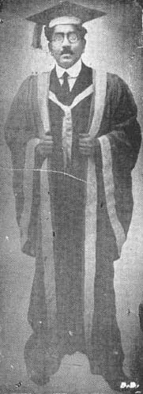

University Problems

Mr. C. R. Reddy, M.A., (Cantab)
Vice-Chancellor, The Andhra University
The third week of August was a week of Convocation Addresses. At three different Universities, three different persons approached the problem of University education from three different angles. There was one striking feature about these performances. At Bombay and Madras, the Governor-Chancellors delivered the addresses while in the Native State of Mysore, a ‘native’ educationist, and the Vice-chancellor of a young University–perhaps the youngest in India, unfolded his pet theme. Sir Leslie Wilson spoke on the kind of culture that is best fitted for our young men, Viscount Goschen emphasised on the essentials of sound education, and Mr. C. Ramalinga Reddy dilated on the requirements of an ideal University.
Sir Leslie did a great service to the young graduates of Bombay as well as to their brethren elsewhere by frankly telling them, that "it is useless, nay, much worse than useless, to cram up subjects merely for a degree, and then forget all about them. It is also worse than useless," he continued, "to read authors like Ruskin and Carlyle and Mathew Arnold in the course of your College career, unless you are prepared to take these great teachers as your gurus, to allow their teaching's to sink into your lives, and become part of yourselves." "Education, rightly understood, is a preparation, not merely for a professional occupation but for life itself." Even the most cantankerous of critics cannot peck at Sir Leslie Wilson when he essays to describe the term ‘nationality’ in its wide and comprehensive sense and pleads for a broad and cosmopolitan outlook.
The spirit of nationality, as Lord Curzon said, in one of his great addresses to Calcutta University, and his words are as true today as they were twenty six-years ago, is an increasing force in the lives and ideals of men," observed Sir Leslie. "It makes small nations great, and great nations greater, but for its full realisation, a spirit of unity, and not of disintegration is required. There must be a sacrifice of the smaller to the larger interest, and a subordination of the unit to the system. In India, it should not be a question of India for the Musalmans, of Bengal for the Bengalis, or the Deccan for the Bengalis or the Deccan for the Deccanis. Neither can it be India for the Indians alone. The contact with the West has profoundly affected the whole structure of national thought and existence. From their joint labours, this new and cosmopolitan culture is springing into life. It is Asian, for its roots are embedded in the traditions and aspirations of an Eastern people; and it is European, because it is aglow with the reflection of the culture of the West."
Sir Leslie has, however, no illusions whatever about the achievement of Bombay in the realm of Universities and he frankly recognised its limitations. But one wonders if endowments and gifts to the University for which he appealed can do any good when the spirit which animates the English Universities in India is not of the right kind.
Viscount Goschen too concedes, like his distinguished colleague and countryman, that mere University degrees and academical hall-marks are of no use in this world. He seems to be even alarmed at the swelling number in which they are manufactured in the mills established by the British Raj in this country. He searches his conscience and pathetically asks: "what is the next milestone on the way of life that these graduates will now set out to pass, what is the final goal they hope to reach, and what is the equipment with which they are furnished for their long journey?"
Surely, Viscount Goschen knows the answer. Indeed, there is only one answer to the question. The system of education introduced in this unfortunate country by an alien Government has so irretrievably demoralised the outlook of Indian youth that they understand little and appreciate less the ideal of education for the sake of education or of education as an aid to culture. Suspecting that even the possession of University degrees at phenomenal cost might not after all guarantee professional livelihood, Viscount Goschen exhorts the alumni of the Madras University to explore the avenues of industrial and business careers and speaks of the enormous possibilities of technical education. But the fair-minded and conscientious man that he is, he is again confronted with the problem of limited funds at the disposal of Government. But is not the plea of ‘limited funds’ for education, an insult to a country in which Governors and Viceroys draw sumptuous salaries and fatten themselves on the poor tax-payer's money? The poems of Browning and the wisdom of Rabbi may be good literature but are bad prescription for the emaciated graduates and famished scholars who are bundled out of effete Universities.
What a relief it is to turn to the address of Mr. C. R. Reddy at Mysore, which is so comprehensive in its range of topics, penetrating in its criticism of University organisation, practical in its suggestions, idealistic in its outlook, and classical in language! There is not one aspect of the University problem that has not come within his compass, not one which he has not dealt with in a masterly way. He takes ‘live’ facts, examines them thoroughly, and passes his unerring judgment with devastating candour, and with astonishing ease makes a case, which alike exposes the hollow types of education which were foisted upon his helpless country by an alien agency and envisages before our eyes an ideal University. One remarkable quality with Mr. Reddy is that he has either something new to say or say something in a new way. His address is so good that it cannot be given in parts, and so long that it cannot be extracted in extenso. One must read and re-read the whole of that brilliant essay on University development, and one will be surely beholden to him for his picture of the ideal University, of which the present Universities in the country are mere caricatures. In Mr. Reddy's ‘Utopia,’ provision will be made at the different grades for vocational, industrial, technical and technological training and education; arts and sciences will flourish; justice will be done to the essentials of an ecumenical University; vernaculars by grades or on a subject basis, as circumstances require, will be the medium of instruction; women's education will be remodeled on the right lines and adapted to modern conditions; the medical branch will be manned by a fixed staff of specialists; professors will not be "provided with careers for life and then by sheer force of sumptuous seniority exalted to the headship of departments," but will be recruited only on the consideration of merit; and above all, the University will be an autonomous corporation of teachers and taught, a spiritual and cultural, entity pursuing knowledge for its own sake, extending the boundaries of Science and Art, and functioning as one of the source-powers for increasing humanity's hold on the good, the true, and the beautiful." Since the demise of Sir Asutosh Mukherji, "the pioneer genius who introduced genuine University education in India," nobody has spoken in this country in Mr. Reddy's robust accents. In him we find the unique combination of a sense of practicality and a note of idealism. He did not merely address the graduates of the University at Mysore, but from Mysore he exhorted "the rulers and leaders of India not to be content with sentimentalising over ideals and providing merely verbal. incentives to lofty conduct, but to bestir themselves with vigorous and honest purpose to the task of establishing the requisite secular conditions and organisations" and thus bring about the ‘spiritual revival’ of India, by the aid of the right and real University spirit. The country owes Mr. Reddy a deep debt off gratitude for his epoch-making address. But will she profit by it? The answer depends upon the extent to which the Government shed their sense of prestige and follow the lines laid down by this eminent educationist.
I. D.